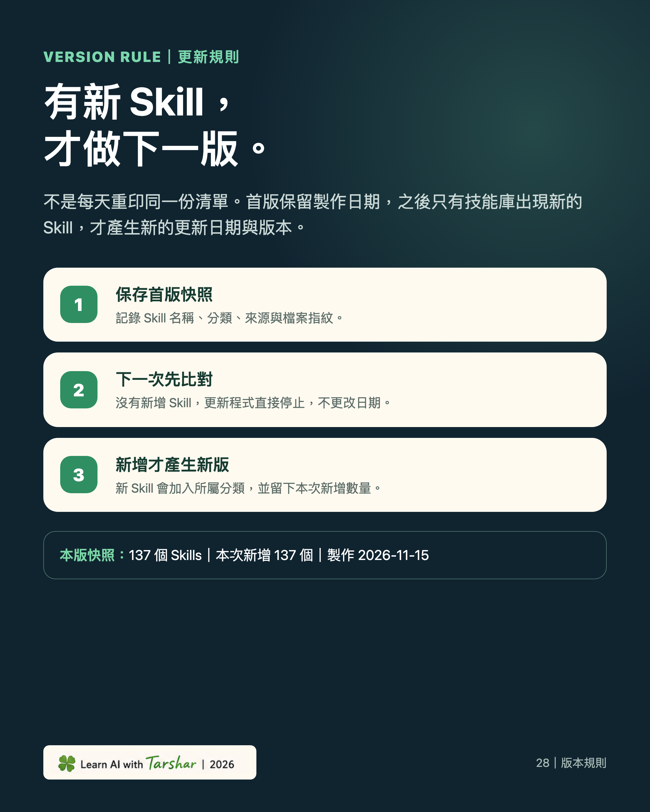

小D版手冊｜AI協作日誌 02
Skills 圖卡館
從一次彙整
變成定期更新
137 個 Skills、28 張品牌圖卡，
建立每週巡檢與最新版同步制度。
137 個 Skills、28 張品牌圖卡，
建立每週巡檢與最新版同步制度。
我先從一張「7 個自動化指令」圖卡得到靈感：如果每個 Skill 都能一列說清楚，複雜的 AI 工作室就能被看懂。
盤點所有自有 Skills、套用正式 Logo、標示製作日期、輸出圖卡、網站與雲端下載包。
只列工作室自行維護的 Skills；外部平台內建能力不混入「我的 Skills」。
已確認 首版盤點 137 個 Skills、12 類，最後產出 28 張品牌圖卡。
巡檢負責發現變化；只有新增 Skill 通過分類、說明與版面檢查，才建立新的發布日期。
正式文字由 HTML／CSS 排版。AI 生圖只負責無字情境底圖，避免 Skill 名稱、中文說明或日期出錯。
由程式掃描真實資料夾，不靠人工估計。
讓小白從工作需求找 Skill，不必先懂技術名稱。
一張最多 7 個，維持手機可讀。
封面、索引、25 張清單與版本規則。
一個負責滑閱，一個保存原尺寸交付。
沒有新增不換版；每週固定檢查避免遺漏。
2026-11-15。日期描述內容版本，不是每次檢查時間。
以 manifest 與 Skills 名稱差異為基準，不靠記憶。
第一輪解決了「不要亂換版」，第二輪才補齊「固定有人檢查」。
後面有新的才可以再更新。
沒有新增時回傳 NO_UPDATE，不改日期、不重出圖。
必須定期檢查更新，把最新版加進去。
每週一上午 9 點主動巡檢，不等有空才看。
只有新增 Skill 且內容檢查通過，才製作與同步下一版。
可重用規則 任何會持續成長的知識成果，都要同時設計「多久檢查」與「什麼變化值得發布」。


首頁、封面與版本規則圖均回讀 HTTP 200，主站工具集已有入口。
回讀 30 檔：28 張 PNG、完整 ZIP、版本清單。
圖卡採 1080 × 1350 版型，正式輸出為 2160 × 2700 PNG。TAR 尚未完成首版美感驗收，不能把技術完成寫成本人認可。
| 巡檢結果 | 動作 | 日期規則 |
|---|---|---|
| 沒有新增 | 留下檢查紀錄，不重出圖片、不重傳網站 | 沿用上一版 |
| 有新增 Skill | 檢查名稱、分類、中文說明與版面，通過後產生全套新版 | 使用發布日 |
| 只有既有內容改字 | 列差異清單；影響理解時才人工修正 | 不自動換日 |
每次巡檢都要回報：是否新增、新增哪些、最新版日期，以及網站與 Drive 連結。
內容閘門：新資料夾不等於能直接上線。發布前仍要確認它是不是正式 Skill、說明是否適合小白、分類是否正確、長名稱會不會破版。
保存新增項目、來源與版本日期。
避免新舊版卡片混在同一系列。
最新版入口指向新日期，舊版保留。
加入新版 PNG、ZIP 與 manifest。
ray 保存程式與專案索引，vault 保存三方接力。
網站、Drive、GitHub 必須都能找到同一版，才回報完成。
像所有人都看同一本最新名冊。Skills 目錄是來源，manifest 是比較基準，網站與 Drive 不能各自改成不同版本。
像每週點名，不是每週重印名冊。137 個名稱沒變時，程式回傳 NO_UPDATE。
檢查到新項目，不代表立刻上架；分類、說明、版面與連結都通過才發布。
像冰箱有保存期限，也要固定打開檢查。規則需要時間觸發，才不會停在「有空再看」。
| 決策 | 理由 | 狀態 |
|---|---|---|
| 只列工作室自有 Skills | 責任與所有權清楚 | 已確認 |
| 28 張系列圖卡 | 手機可讀、分類可維護 | 已確認 |
| 正式文字用 HTML／CSS | 中文、名稱、日期可精確重建 | 已確認 |
| 每週一 09:00 巡檢 | 避免新增 Skill 被遺漏 | TAR 指定定期；週期可再調整 |
| 新增才換版 | 版本日期真正代表內容變化 | 已確認 |
| 發布前人工內容檢查 | 檔名新增不代表分類與說明正確 | 已納入流程 |
這一輪建立日誌與排程，沒有新增 Skill，所以不應為了看起來有更新而更換圖卡日期。
本次演化一句話：我不是把 137 個 Skills 做成一套會過期的漂亮圖片，而是把它變成每週會看、只有真正增加能力才換版的工作室能力目錄。
固定巡檢、差異偵測、內容驗證、全套同步、回讀成功。任何一個位置沒有更新完成，都不能稱為最新版已交付。
版本 v1.0｜更新日期 2026-11-15｜內容正本與生成時間線保存在 ray；三方交班保存在 tarshar-vault。封面情境圖由內建 imagegen 生成，正式文字與 Logo 由版面程式排版。